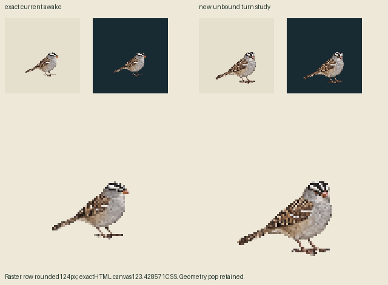
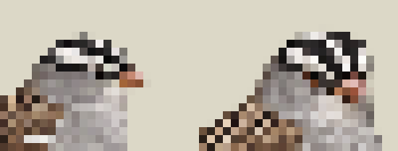
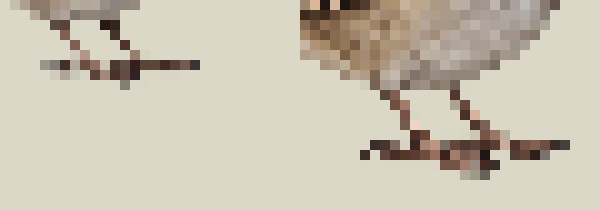

One new skull/bill/crown turn. Body enlarges and feet drop; new contact list is empty. Exact old awake retained. Producer HOLD assessment; independent review pending. No app binding or retry.
Authored30Hz awake30 / newstudy12 / sameawake30. Fixed old root/pivot, no transforms to hide drift. Source96px canvas/world123.428571, density7/9; browser lays out123.421875CSS. Each panel uses1CSS/world. Replay resets explicitly.
Old positive foot-probe coordinates now hit BELLY in the new drawing. They are diagnostics only and are absent from the new frame contacts. New toes are visibly lower. Empty contacts mean unbound ground-pose study, not airborne flight. All native alpha and fringe colors are retained, no crop/body fit/paint/snap.



Portable zero-call preflight · Primary sources · Body/contact diagnostics · Exact authored-clock APNG
Nominal72ticks; player stops scheduling on firsttick71 while final awake remains held. Mac completion timing, named-look admission, physical support and normal-yard acceptance are untested.